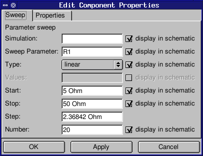
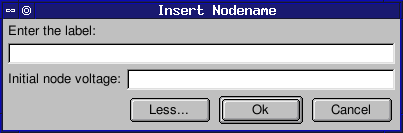
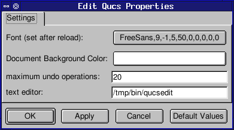
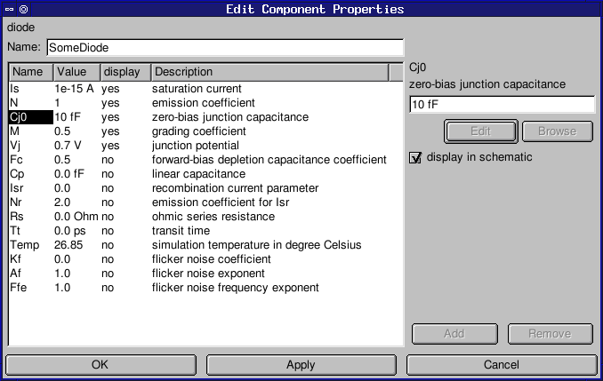
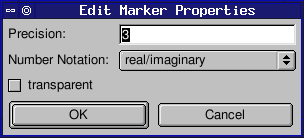
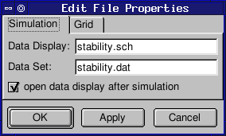
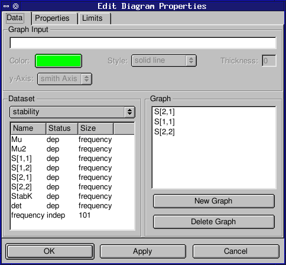

Screenshots of dialogs
The screenshots below show some of the dialogs the user comes across when using the Qucs GUI.|  Parameter sweep dialog. |
 Wire label dialog.  Application property dialog. |
|  Component property dialog. |
|
|  Data marker dialog.  File property dialog. |
 Diagram property dialog. |